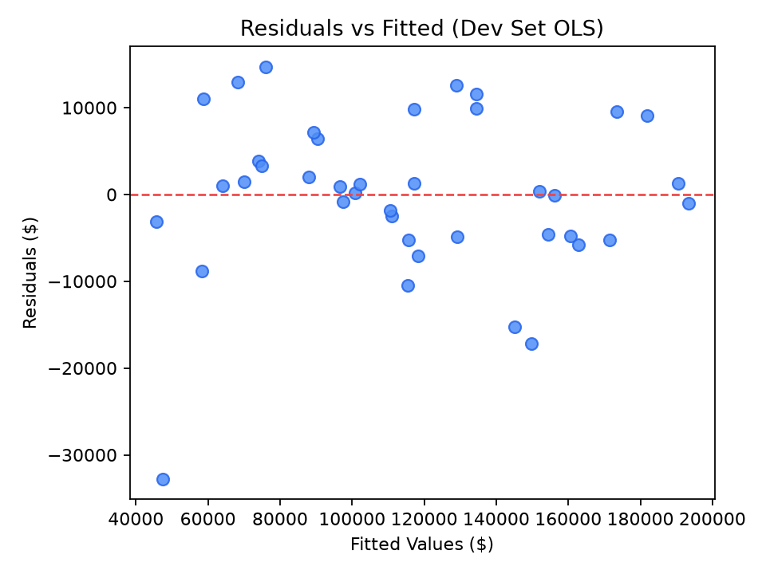
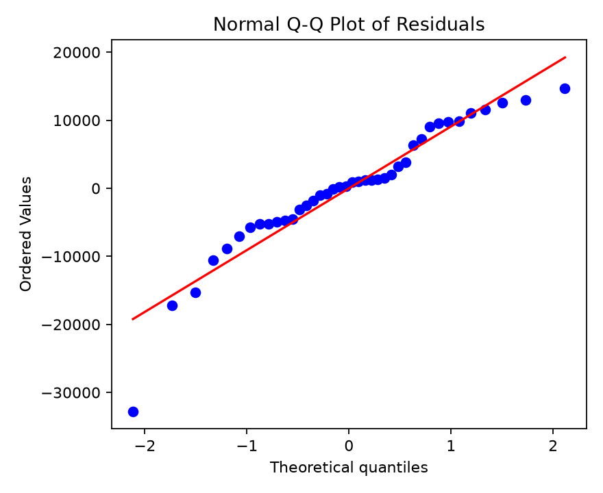

Business Understanding
Define the objective and success criteria before touching data.
Data Understanding
Explore the raw dataset before any transformation.
Dataset Preview (first 5 rows)
| # | R&D Spend | Administration | Marketing Spend | State | Profit |
|---|---|---|---|---|---|
| 1 | 165,349.20 | 136,897.80 | 471,784.10 | New York | 192,261.83 |
| 2 | 162,597.70 | 151,377.59 | 443,898.53 | California | 191,792.06 |
| 3 | 153,441.51 | 101,145.55 | 407,934.54 | Florida | 191,050.39 |
| 4 | 144,372.41 | 118,671.85 | 383,199.62 | New York | 182,901.99 |
| 5 | 142,107.34 | 91,391.77 | 366,168.42 | Florida | 166,187.94 |
Descriptive Statistics
| Statistic | R&D Spend | Administration | Marketing Spend | Profit |
|---|---|---|---|---|
| Mean | 73,721.62 | 121,344.64 | 211,025.10 | 112,012.64 |
| Std Dev | 45,902.26 | 28,017.80 | 122,290.31 | 40,306.18 |
| Min | 0.00 | 51,283.14 | 0.00 | 14,681.40 |
| Median | 73,051.08 | 122,699.80 | 212,716.24 | 107,978.19 |
| Max | 165,349.20 | 182,645.56 | 471,784.10 | 192,261.83 |
Data Preparation
Encode, split, and scale for unbiased evaluation.
Modeling — 20 Feature-Selection Methods
All methods trained on fit set only. Compare using validation RMSE. Click a column header to sort.
| Rank | Method | Features | Val RMSE | Val MAE | Selected Features |
|---|
5-Method Deep Dive — RMSE & R² vs. # Features
Sweep k = 1 → 5 for each method. Final model fitted on dev set, evaluated on held-out test set.
Full Results Table
| Method | # Features | Selected Features | Test RMSE | Test R² |
|---|
Evaluation — Final Test Results
Winner: Permutation Importance (k=3) · Re-fitted on full dev set · Scored once on held-out test set.
Selected features: R&D Spend Marketing Spend State_New York
Test Set Predictions
| # | Actual Profit | Predicted Profit | Residual | |Error| |
|---|
Statistical Inference & OLS Regression Diagnostics
Standard errors, hypothesis tests (t-stat, p-value), confidence intervals, VIF, and residual diagnostics.
Model Coefficients & Statistical Significance Tests
| Term / Predictor | Coefficient (β) | Std. Error | t-Statistic | p-Value | 95% Conf. Interval | VIF | Significance |
|---|---|---|---|---|---|---|---|
| Intercept (β0) | 45,671.8930 | 3,600.1147 | 12.6862 | < 0.0001 | [38,370.52, 52,973.26] | — | *** p < 0.001 |
| R&D Spend (β1) | 0.7841 | 0.0484 | 16.1958 | < 0.0001 | [0.6859, 0.8823] | 2.280 | *** p < 0.001 |
| Marketing Spend (β2) | 0.0391 | 0.0201 | 1.9478 | 0.0593 | [-0.0016, 0.0799] | 2.260 | • p < 0.10 |
| State_New York (β3) | -510.4574 | 3,260.9347 | -0.1565 | 0.8765 | [-7,123.94, 6,103.02] | 1.015 | ns (p = 0.88) |
Regression Diagnostic Visualizations (OLS Assumptions)

Checks linearity and constant variance. Residuals bounce randomly around zero without funnel shape or systematic curvature, validating homoscedasticity.

Checks normality of error terms. Standardized residuals adhere closely to the theoretical diagonal line, confirming residual normality.
Methodological Distinction: Statistical Inference vs. Predictive Modeling
- Objective: Quantify relationships, test scientific hypotheses (e.g., H₀: βⱼ = 0), and understand underlying mechanisms.
- Core Metrics: Standard errors, t-statistics, p-values, 95% confidence intervals, and Adjusted R².
- Assumptions: Relies on Gauss-Markov assumptions (Linearity, Independence, Homoscedasticity, Normality).
- Focus: Unbiased parameter estimation on observed data.
- Objective: Maximize accuracy and minimize prediction error on previously unseen observations.
- Core Metrics: Held-out Test RMSE, Test MAE, Out-of-sample R², and cross-validation loss.
- Tradeoff: Embraces the Bias-Variance Tradeoff (accepts slight coefficient bias to reduce variance).
- Focus: Generalization capability verified on an isolated holdout test set.
Adjust expenditure parameters or click a preset scenario to compute predicted startup profit in real-time using our winning 3-feature OLS regression model.